Página web de seguridad informática
HTML · CSS · API · JS
Creación de una página web educativa sobre ciberseguridad que promueva buenas prácticas digitales. Incluye quiz interactivo y noticias.
Bienvenid@ a mi espacio
Soy una persona entusiasta, curiosa por naturaleza y con intereses diversos. Me considero responsable, constante y con una gran capacidad para adaptarme a distintos contextos y formas de trabajo. Disfruto aprender de todo un poco y me motiva profundamente adquirir nuevos conocimientos, ya sea en mi área o más allá de ella. Para mí, cada experiencia es una oportunidad para crecer, descubrir y sumar herramientas que enriquezcan mi forma de ver y hacer las cosas.
Siempre pensé que estudiaría medicina. Pero un giro inesperado —y el ITAM— cambiaron mi vida. Pasé de no querer saber nada de mates o compus, a convertirme en una apasionada de la programación y los datos
Me encanta la comida y hacer ejercicio, me gusta aprender idiomas nuevos, disruto escuchar música siempre. Me gusta armar rompezabezas y ver series.
 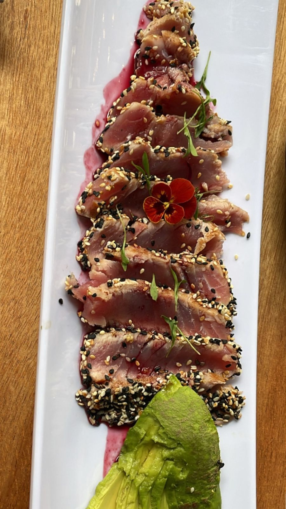
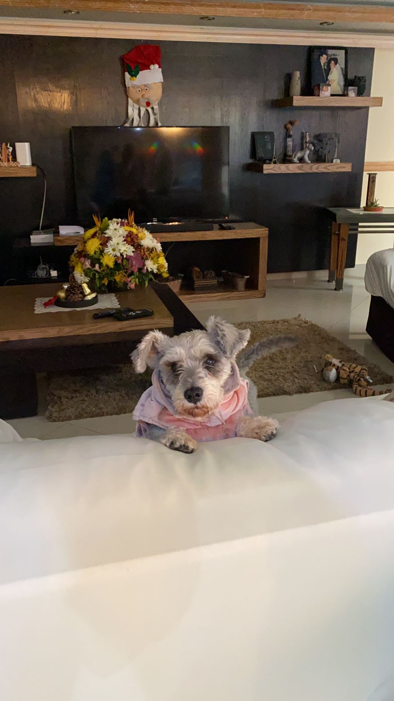
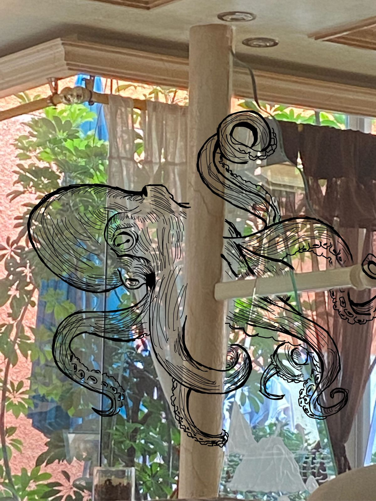
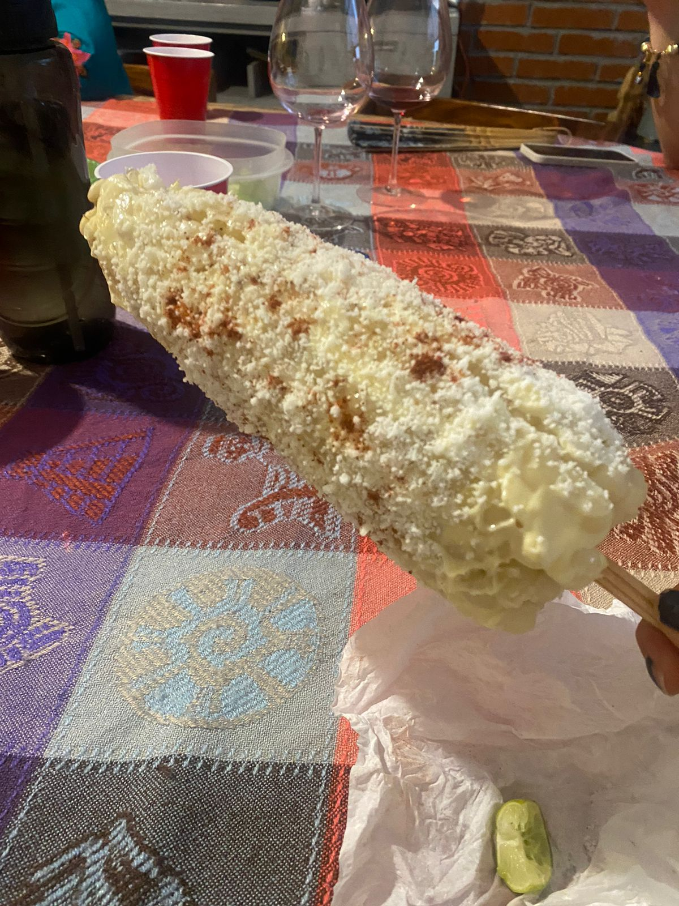
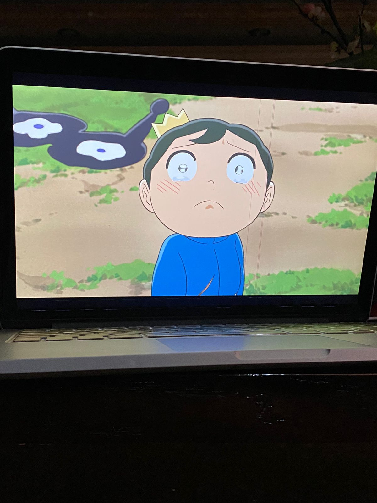
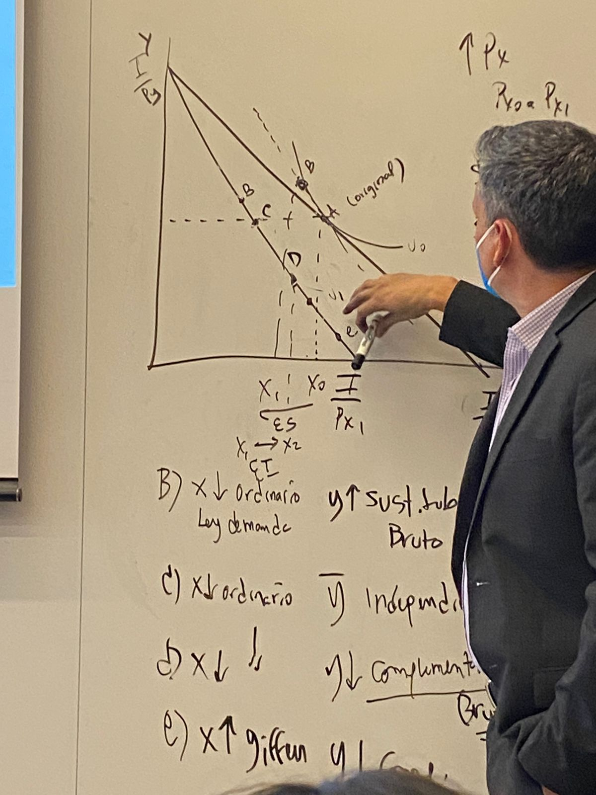
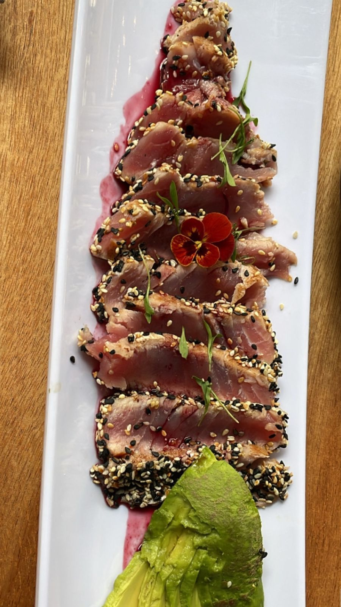
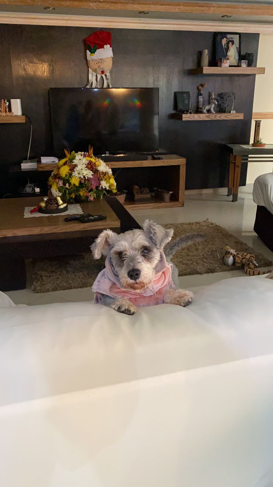
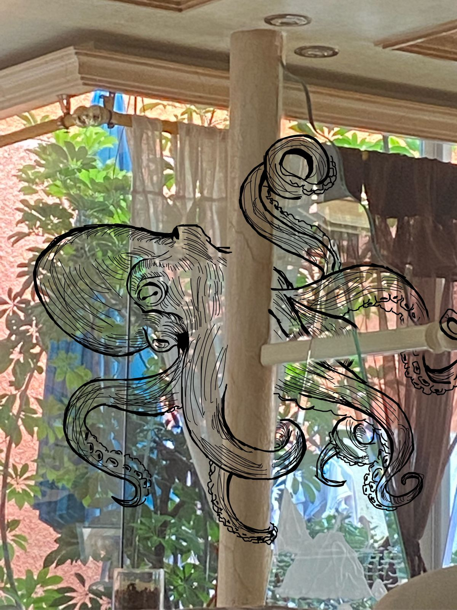
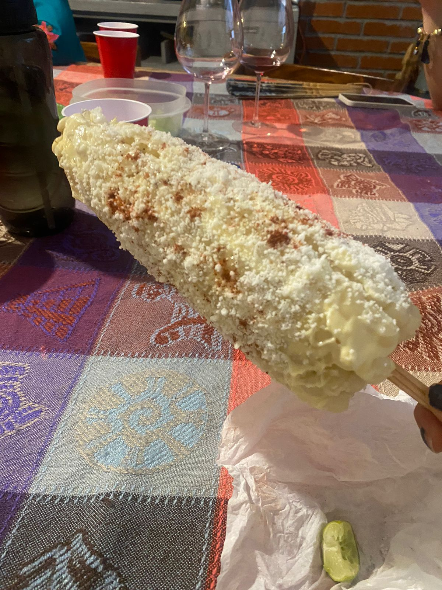
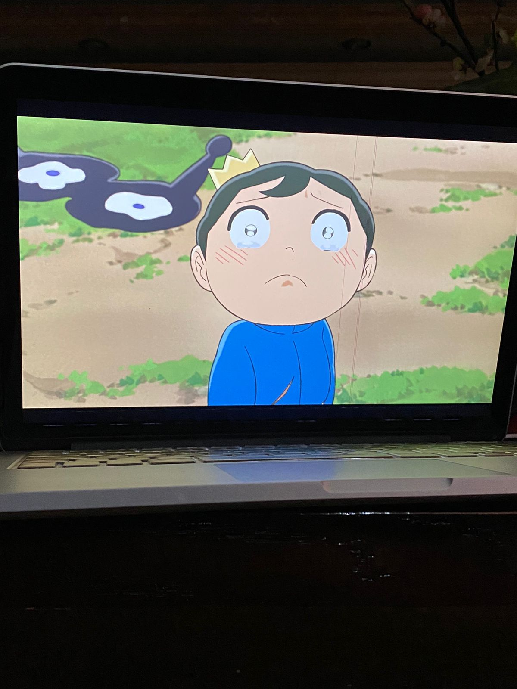
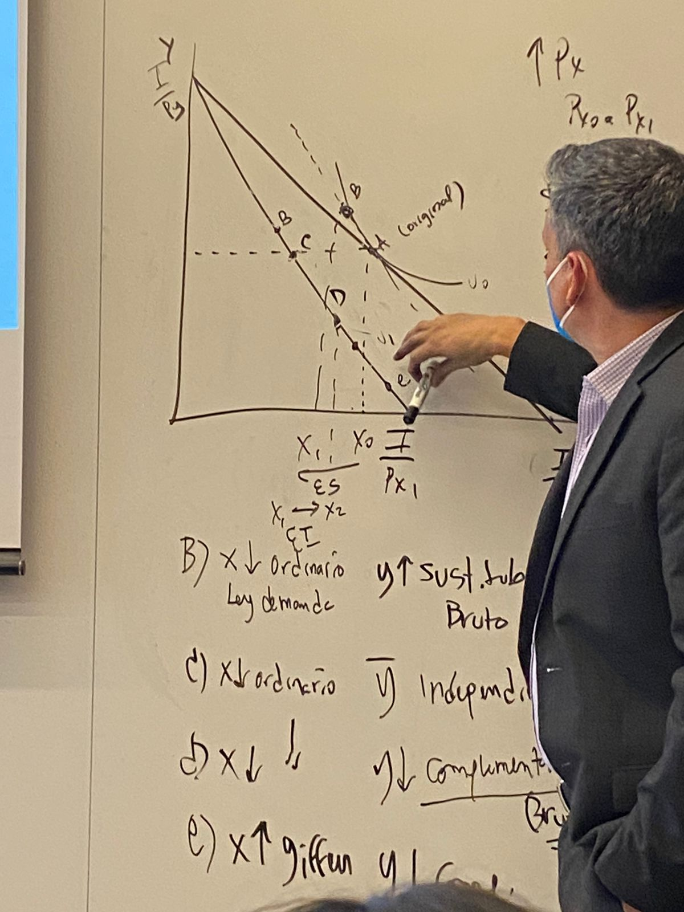
Actualmente curso el 7mo semestre de la carrera de Ciencia de Datos en el Instituto Tecnológico Autónomo de México.
Coordino compras, logística, inventarios y flujo de materiales en ambos campus del ITAM. Este rol me enseñó liderazgo, organización y toma de decisiones estratégicas bajo presión.
Apoyo en prácticas de laboratorio desde hace 2 años. Aunque el tiempo es limitado, disfruto enseñar y acompañar procesos de aprendizaje en laboratorio.
Algunos proyectos académicos y personales que representan lo que hago y lo que estoy aprendiendo.
HTML · CSS · API · JS
Creación de una página web educativa sobre ciberseguridad que promueva buenas prácticas digitales. Incluye quiz interactivo y noticias.
Python · Deep Learning · fMRI
Se construyó un modelo de deep learning capaz de identificar patrones cerebrales asociados a tareas cognitivas y rasgos conductuales. En este proyecto se procesaron series temporales de 360 regiones cerebrales y se entrenó una red neuronal recurrente en PyTorch.